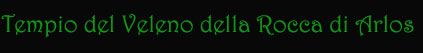
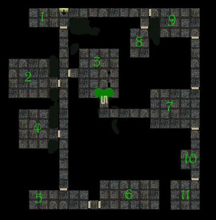

Presso la Roccaforte militare di Arlos si trova uno dei Templi del Veleno minore affiliati al Culto del Serpente del Gran Sacerdote del Tempio Supremo di Pergar. Si tratta di un Tempio del Veleno alquanto caratteristico costruito al centro dei sotterranei della Roccaforte. Trovandosi in una roccaforte militare la stragrande maggioranza delle vesti appartiene all'esercito pergariano. Ciò da un lato rende il numero di fedeli meno stabili (per numero di morti e trasferimenti) facendolo assestare intorno al 50% delle normali percentuali presenti nelle altre comunità, dall'altro rappresenta un luogo strategicamente importante per il Gran Sacerdote e per il Concilio delle Vesti Rosse, i quali sanno che in caso di bisogno possono trovare fra le vesti affiliate di questo tempio soldati ed ufficiali professionisti. Per le maggiori richieste di incantesimi (in particolare delle rigenerazioni) si consideri però che tutti i chierici di questo tempio ottengono un ammontare di denaro mensile pari al 125% di quello normalmente loro spettante.
STRUTTURA DEL TEMPIO DEL VELENO
Il tempio è interamente sotterraneo costruito nella dura roccia della fortezza. Ogni quadrato misura 3 metri di lato.

1) Sala
d'ingresso. Vi è
un posto di guardia dove sono presenti sempre due
vesti nere (soldier
veterani).
2) Sala dei riti
di trance
(capienza massima 80 fedeli). La porta di questa sala è chiusa con l'aggiunta
di tendaggi che la rendono ermetica per evitare la fuoriuscita delle droghe nel
resto del tempio. Tutti i pavimenti sono ricoperti da morbidi tappeti e vi sono
molti piccoli bruciatori di incensi e di droghe usati per i riti. Il costo
dell'arredo è pari a 1000 karsi (manutenzione mensile 8 karsi).
3) Sala dei riti
della ricchezza e del godimento
(capienza massima 90 fedeli). Questa sala è dedicata ai riti della ricchezza e
del godimento, l'Adepto del Veleno Sacro entrando dal passaggio segreto
supervisione al rito tra le fauci della Testa del Serpente dove brucia
permanentemente un braciere in onore alla divinità. La sala è attrezzata con
grandi cuscini, tappeti e piccoli tavolini di legno e avorio dove si banchetta o
si effettuano le orge. Il costo dell'arredo è pari a 500 karsi (manutenzione
mensile 4 karsi + 25 karsi per la Testa del Serpente ed il braciere).
4) Sala dei riti
della violenza
(capienza massima 60 fedeli). Questa sala è dedicata ai riti della violenza ed
è per questi attrezzata con bracieri, catene fissate a terra ed alle pareti,
fruste e strumenti di tortura di vario tipo. Il costo dell'attrezzatura è pari
a 660 karsi (manutenzione mensile 5.5 karsi).
5) Sala comune.
Questa sala con vari tavoli, sedie e scaffali è utilizzata dalle vesti per
mangiare e riposare. Vi si trovano sempre due
vesti nere (soldier
veterani).Il costo dell'arredo è pari a 125 karsi (manutenzione mensile 1 karso).
6) Sala delle
vesti. In questa
grossa sala risiedono le vesti che lavorano per il Tempio, sia per la sicurezza
che per i riti, oltre ai Figli del Serpente ed ai Combattenti del Serpente. Vi
sono spazi attrezzati per ospitare 15 persone. Il costo dell'attrezzatura è
pari a 480 karsi (manutenzione mensile 4 karsi).
7) Sala delle
Squame. In questa
bellissima sala le cui pareti sono ricoperte con squame di serpenti l'Adepto del
Veleno Sacro prepara i suoi riti e prega la divinità. Inoltre in questa sala
dove è presente un salotto con poltrone vellutate ed un angolo studio con
scrivania, poltroncine e scaffali da libreria l'Adepto del Veleno Sacro riceve i
suoi ospiti per motivi politici, religiosi e/o commerciali. Il costo dell'arredo
è pari a 1500 karsi (manutenzione mensile 12,5 karsi).
8) Sala Privata.
Si tratta di una camera da letto, perfettamente arredata con anche scrivania e
poltrona, tappeti, letto a due piazze, braciere e armadi. Solitamente vi
alloggia l'Adepto del Veleno, il Combattente del Serpente o la veste più
importante del Tempio. Il costo dell'arredo è pari a 300 karsi (manutenzione
mensile 2,5 karsi).
9) Sala d'aspetto.
Si tratta di una sala d'aspetto dove gli ospiti o le vesti attendono prima di
recarsi dall'Adepto del Veleno Sacro. Vi sono dei tavoli e dei morbidi divani.
Il costo dell'arredo è pari a 120 karsi (manutenzione mensile 1 karso).
10) Sala della
guardia. Vi è un
posto di guardia dove sono presenti sempre due
vesti nere (soldier
veterani).
11) Stanza
dell'Adepto del Veleno Sacro.
E' la stanza dell'Adepto del Veleno Sacro perfettamente arredata con anche
scrivania e poltrona, tappeti, letto a due piazze, braciere e armadi.
Solitamente vi alloggia l'Adepto del Veleno, il Combattente del Serpente o la
veste più importante del Tempio. Il costo dell'arredo è pari a 360 karsi
(manutenzione mensile 3 karsi).
IL PERSONALE DEL TEMPIO DEL VELENO
5
Vesti nere
addette alla sicurezza (soldier veterani dell'esercito pergariano) stipendio 9
karsi al mese l'uno.
2 Figli del
Serpente (1°
livello) stipendio 12 karsi al mese l'uno.
0 Vesti nere
addette ai riti (sono donne esperte che partecipano ai riti orgiastici e danno
una mano a mantenere pulito il tempio). Stipendio 7.5 karsi al mese l'uno.
I COSTI DEL TEMPIO
Totale
manutenzione sale:
66,5 karsi al mese.
Totale stipendi:
69 karsi al mese (Sicurezza 45, Chierici 24, Vesti 0).
Vitto:
22,2 karsi al mese
Contratto per mensa soldati 1,8 karsi al mese a persona: 5 persone = 9 karsi
al mese
Contratto per mensa sotto-ufficiali 3.6 karsi al mese a persona: 2 persone = 7,2
karsi al mese (chierici)
Contratto per mensa ufficiali 6 karsi al mese a persona: 1 persone = 6 karsi al
mese (adepto del veleno sacro)
Illuminazione
del Tempio: 10,8
karsi al mese
8 lanterne sempre accese (93 karsi, manutenzione 1,2 karsi al mese)
120 litri di olio per lanterne al mese (0.08
karsi al litro) 9.6 karsi.
TOTALE
SPESE MENSILI DEL TEMPIO:
-169 karsi al
mese